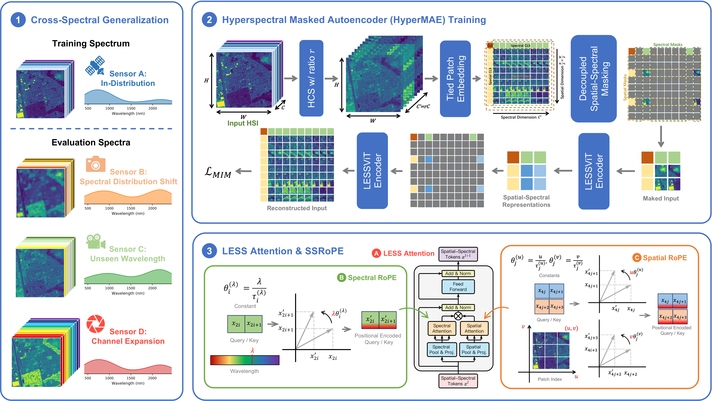
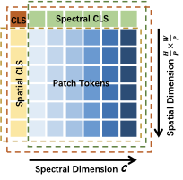
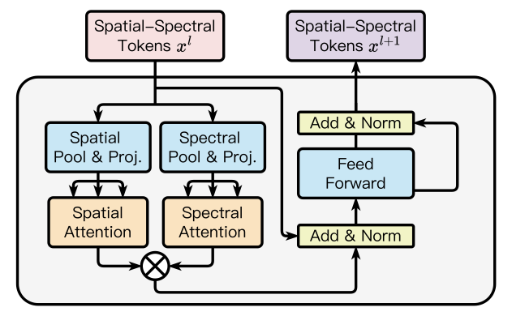
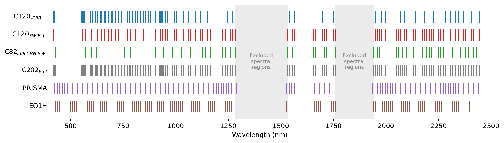
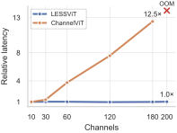
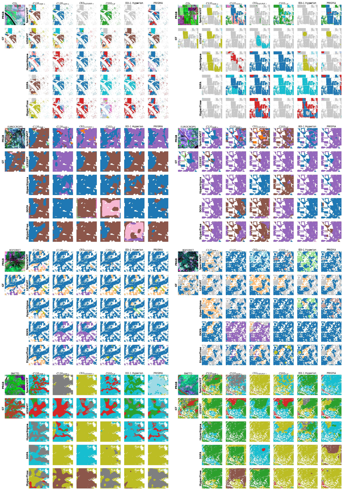

Abstract

Figure: Overview of LESSViT. ① Cross-spectral generalization setting: train on a fixed spectral configuration and evaluate across sensors with varying wavelength coverage and channel configurations. ② HyperMAE pretraining with decoupled spatial–spectral masking and hierarchical channel sampling for scalable and robust learning. ③ LESS Attention with SSRoPE for efficient spatial–spectral modeling.
Key Contributions
-
1
LESS Attention — a structured low-rank factorization of spatial–spectral attention that reduces complexity from O(N²C²) to O(rNC), enabling explicit and scalable joint spatial–spectral modeling across hundreds of hyperspectral channels.
-
2
LESSViT — a channel-agnostic spatial–spectral Vision Transformer with wavelength-aware positional encoding (SSRoPE), enabling consistent and robust modeling under varying spectral configurations across sensors.
-
3
Cross-spectral evaluation protocol — a controlled SpectralEarth benchmark covering channel-subset changes and simulated sensor responses, isolating spectral variation while keeping spatial content fixed.
Method
LESSViT satisfies three key requirements for cross-spectral generalization: channel-agnostic tokenization, explicit spatial–spectral modeling, and computational scalability. It integrates four tightly coupled components:
[CLS] tokens for structured aggregation.
(a) Spatial-Spectral Tokenization. The tied patch embedding converts a hyperspectral image into a grid of spatial–spectral tokens with spatial, spectral, and global [CLS] tokens.

(b) LESS Attention Block. The LESS block factorizes spatial and spectral attention via structured decomposition, enabling efficient modeling of joint spatial–spectral interactions.
Cross-Spectral Generalization Benchmark
We evaluate LESSViT on SpectralEarth, a large-scale hyperspectral pretraining dataset and evaluation benchmark built on EnMAP (202 channels, 30 m resolution). Models are pretrained and fine-tuned on a fixed channel set (C120VN+) and evaluated under six spectral configurations that isolate channel-subset changes and simulated sensor responses:
120 channels: 80 VNIR + 40 SWIR. Training and in-distribution evaluation configuration.
120 channels: 40 VNIR + 80 SWIR. Same count as training, complementary spectral distribution.
82 complementary channels (20 VNIR + 62 SWIR), interleaved with the training bands. Tests interpolation to unobserved band centers.
All 202 channels. Tests generalization when additional bands beyond the training set are available.
PRISMA-like · 133 bands
Gaussian spectral response functions (SRFs) simulate spectral mixing using published band centers and FWHMs.
EO-1 Hyperion-like · 155 bands
SRF-based observations synthesized from EnMAP. Bands with insufficient source support or strong atmospheric absorption are excluded.
These are simulated sensor responses, not evaluation on independently acquired PRISMA or Hyperion imagery.

Band-center locations for all six configurations. Each tick is a retained band center; shaded regions indicate excluded spectral regions. View vector PDF.
Downstream Datasets
We evaluate on five geospatial labeling products covering segmentation and multi-label classification across diverse land cover types and geographic regions:
| Dataset | Region | Task Type | Metric |
|---|---|---|---|
| CDL | USA | Crop Type Segmentation | mIoU ↑ |
| EuroCrops | Europe | Crop Type Segmentation | mIoU ↑ |
| CORINE | Europe | Land Cover Classification | mAP ↑ |
| BDFORET | France | Forest Type Segmentation | mIoU ↑ |
| BNETD | Côte d'Ivoire | Land Cover Segmentation | mIoU ↑ |
Results
We compare LESSViT with SpectralViT, HyperSigma, DOFA, and HyperFree. LESSViT and SpectralViT are pretrained on C120VNIR+ using the same data and protocol; the other baselines use their released pretrained weights. All models are fine-tuned on C120VNIR+ for 20 epochs and evaluated without further adaptation. Results are means over five random seeds.
Average Relative Performance Drop (%) ↓
Unweighted average across five downstream tasks; relative drop = 100 × (1 − OOD / ID). Lower is better. Bold marks the best value in each column.
| Model / setting | C120SWIR+ | C82 | C202 | PRISMA | EO1H |
|---|---|---|---|---|---|
| SpectralViT | 59.1 | 55.5 | 55.8 | 56.2 | 62.6 |
| HyperSigma | 37.4 | 42.9 | 34.6 | 44.1 | 61.3 |
| DOFA | 36.0 | 37.1 | 41.4 | 41.3 | 68.2 |
| HyperFree | 24.6 | 33.2 | 24.1 | 18.0 | 34.6 |
| LESSViT | 4.7 | 10.7 | 2.0 | 3.0 | 4.2 |
Results by Dataset
Expand a dataset to compare all six configurations. Higher is better. Download result data (JSON). Standard deviations and linear-probing results are available in the updated paper.
CDL (mIoU ↑)
| Model / setting | C120VNIR+ (ID) | C120SWIR+ | C82 | C202 | PRISMA | EO1H |
|---|---|---|---|---|---|---|
| SpectralViT | 73.33 | 15.11 | 12.36 | 5.59 | 10.84 | 7.81 |
| HyperSigma | 44.48 | 13.93 | 14.50 | 14.51 | 10.08 | 12.86 |
| DOFA | 40.06 | 18.38 | 18.08 | 12.39 | 13.06 | 6.39 |
| HyperFree | 42.50 | 28.48 | 16.22 | 22.16 | 28.09 | 19.59 |
| LESSViT | 53.44 | 48.32 | 42.08 | 50.75 | 48.96 | 49.05 |
EuroCrops (mIoU ↑)
| Model / setting | C120VNIR+ (ID) | C120SWIR+ | C82 | C202 | PRISMA | EO1H |
|---|---|---|---|---|---|---|
| SpectralViT | 71.69 | 26.27 | 41.14 | 46.28 | 42.23 | 29.32 |
| HyperSigma | 56.54 | 52.16 | 48.45 | 51.59 | 46.32 | 38.84 |
| DOFA | 55.59 | 36.85 | 32.83 | 31.52 | 50.28 | 50.40 |
| HyperFree | 52.22 | 46.63 | 32.87 | 36.25 | 45.71 | 20.91 |
| LESSViT | 57.91 | 55.69 | 55.47 | 57.81 | 57.63 | 57.48 |
BDFORET (mIoU ↑)
| Model / setting | C120VNIR+ (ID) | C120SWIR+ | C82 | C202 | PRISMA | EO1H |
|---|---|---|---|---|---|---|
| SpectralViT | 77.17 | 48.31 | 48.68 | 48.73 | 46.77 | 44.55 |
| HyperSigma | 63.76 | 47.97 | 44.15 | 48.94 | 43.68 | 9.54 |
| DOFA | 58.14 | 51.26 | 42.03 | 50.45 | 45.04 | 2.36 |
| HyperFree | 58.42 | 54.43 | 52.63 | 54.13 | 54.44 | 53.93 |
| LESSViT | 63.87 | 62.43 | 60.58 | 63.35 | 62.03 | 62.60 |
BNETD (mIoU ↑)
| Model / setting | C120VNIR+ (ID) | C120SWIR+ | C82 | C202 | PRISMA | EO1H |
|---|---|---|---|---|---|---|
| SpectralViT | 44.69 | 16.86 | 17.06 | 16.66 | 18.00 | 16.07 |
| HyperSigma | 30.36 | 18.78 | 17.64 | 17.68 | 15.31 | 7.22 |
| DOFA | 28.88 | 18.06 | 18.87 | 18.89 | 15.75 | 6.29 |
| HyperFree | 29.53 | 18.53 | 16.87 | 21.47 | 21.93 | 18.97 |
| LESSViT | 32.37 | 30.76 | 26.35 | 31.25 | 31.80 | 29.62 |
CORINE (mAP ↑)
| Model / setting | C120VNIR+ (ID) | C120SWIR+ | C82 | C202 | PRISMA | EO1H |
|---|---|---|---|---|---|---|
| SpectralViT | 78.93 | 36.90 | 36.92 | 38.37 | 35.24 | 33.08 |
| HyperSigma | 69.21 | 36.05 | 27.56 | 47.11 | 38.60 | 39.48 |
| DOFA | 66.40 | 37.89 | 48.27 | 35.33 | 25.66 | 17.58 |
| HyperFree | 74.04 | 47.93 | 63.31 | 68.48 | 65.83 | 62.28 |
| LESSViT | 76.35 | 74.21 | 72.95 | 75.99 | 75.05 | 75.01 |
The benchmark controls spatial content and varies spectral inputs. Different pretraining sources and patch sizes remain confounding factors in cross-model comparisons.
Effect of Attention Design
Matched HyperMAE pretraining with a ViT-S backbone and 64 × 64 inputs isolates attention design. Full and LESS spatial–spectral attention are substantially more robust than spatial-only attention. Full attention has higher OOD segmentation scores; LESS has higher CORINE mAP in every configuration.
Average segmentation mIoU
| Model / setting | C120VNIR+ (ID) | C120SWIR+ | C82 | C202 |
|---|---|---|---|---|
| Spatial Attention | 56.29 | 22.76 | 16.08 | 29.25 |
| Full Spatial–Spectral Attention | 49.05 | 46.70 | 46.49 | 44.87 |
| LESS Attention | 49.19 | 46.07 | 43.97 | 42.88 |
CORINE mAP
| Model / setting | C120VNIR+ (ID) | C120SWIR+ | C82 | C202 |
|---|---|---|---|---|
| Spatial Attention | 76.97 | 29.32 | 26.37 | 33.51 |
| Full Spatial–Spectral Attention | 71.25 | 70.17 | 70.78 | 69.47 |
| LESS Attention | 73.19 | 71.18 | 72.14 | 70.00 |
Positional Encoding and Channel Sampling
ViT-S models pretrained for 50 epochs. SSRoPE improves dense prediction; a higher retained HCS ratio yields modest changes. The lower retained ratio reduces pretraining time by 17% in this ablation.
Average segmentation mIoU. Default: SSRoPE, retained ratio [0.2, 0.3]; higher HCS: SSRoPE, [0.4, 0.5].
| Model / setting | C120VNIR+ (ID) | C120SWIR+ | C82 | C202 |
|---|---|---|---|---|
| Default | 44.48 | 42.66 | 39.96 | 43.63 |
| Without SSRoPE (SIREN) | 40.04 | 37.76 | 37.84 | 38.65 |
| Higher HCS ratio | 45.44 | 44.09 | 40.70 | 43.95 |
Computational Efficiency
On CORINE in BF16, LESSViT uses approximately 29× less fine-tuning step time, 7× less inference latency, and 11× less inference memory than ChannelViT. The advantage is relative to full spatial–spectral attention; LESSViT remains more expensive to train than channel-collapsing methods.
| Model | Encoder params (M) | FT step (s) | FT peak memory (GB) | Inference (ms) | Inference memory (GB) |
|---|---|---|---|---|---|
| SpectralViT-B | 87.5 | 0.39 | 14.9 | 7.1 | 0.64 |
| HyperSigma-B | 203.0 | 0.17 | 12.2 | 32.0 | 1.31 |
| DOFA-B | 111.8 | 0.035 | 1.93 | 13.3 | 0.87 |
| HyperFree-B | 151.5 | 0.18 | 2.25 | 52.8 | 0.94 |
| ChannelViT-B* | 85.5 | 21.0 | ≈230* | 221.4 | 7.73 |
| LESSViT-B | 83.2 | 0.73 | 87.2 | 30.5 | 0.67 |
Fine-tuning effective batch size 32; inference batch size 1. *ChannelViT exceeds GPU memory at batch size 32; ≈230 GB is estimated from the OOM error. Its step time uses microbatch size 4 and eight accumulation steps.

Latency normalized to each model’s 10-channel setting, measured over 2,000 samples. ChannelViT runs out of memory at 200 channels on the 144 GB GPU used for this benchmark. Near-constant observed latency is specific to these measurements.
Qualitative Segmentation Results
Compare all five models across CDL, EuroCrops, BDFORET, and BNETD, including simulated EO-1 Hyperion and PRISMA responses. LESSViT preserves more stable spatial predictions under spectral reconfiguration. Select the figure to inspect the full-resolution PDF.

PRGB: pseudo-RGB input; GT: ground truth. Background pixels are masked in predictions. Open full-resolution figure.
Citation
If you find LESSViT useful in your research, please cite our paper: